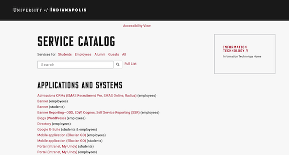

My Work Projects
University of Indianapolis IT Service Catalog

The University of Indianapolis IT Service Catalog is a project a co-worker and I built from scratch for the University's IT Department. The purpose of this application is to allow users to be able to search for a service offered by the University of Indianapolis' IT Department and get information and/or trouble shooting tips about that service. The primary technologies used to build this application were Laravel, PHP, HTML5, SASS, Bootstrap, JavaScript, npm, and MySQL.
University of Indianapolis Study and Work Abroad
I made frequent updates to the University of Indianapolis' Study Abroad website, from adding and updating travel dates and details, professor information, and just general changes and updates that need to take effect. Most of this work was done using HTML and CSS.
UIndy Application For Graduation

I frequently created and updated forms, like this Application For Graduation, using HTML and WordPress. This is just one of many forms that I have worked on for the University of Indianapolis.
Protective Insurance
During my time at Protective Insurance, I helped make content updates to the company's public-facing website, along with fixing rendering issues and browser compatibility issues.